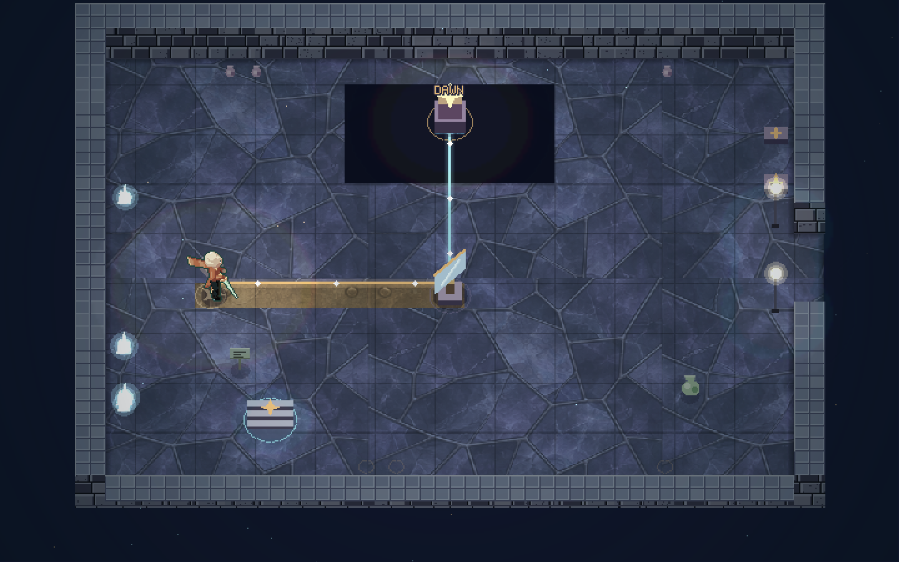
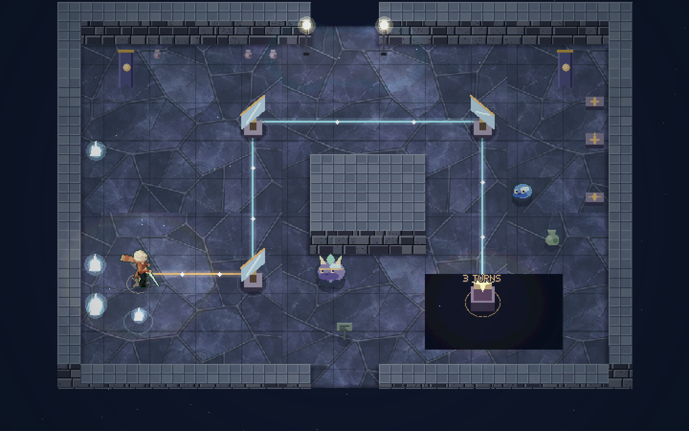
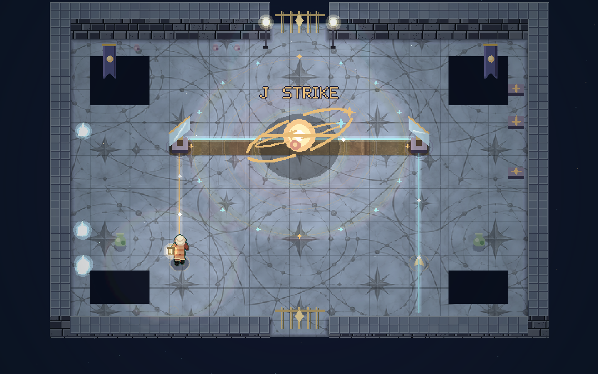

Player guide and delivery review
Emberglass Observatory is Lanternwake's second dungeon. It has 22 rooms in three floor groups. The player finds the Prism Lens, restores three light relays, and raises a beacon above Cinderfall.
The dungeon includes a map, a compass, three small keys, the Great Seal, three secrets, a miniboss, and a three-phase boss. Its completion reward is one heart and 30 echoes. The game then returns the player to the overworld.
Completion time is not yet measured. The dungeon's length comes from its rooms, puzzles, branches, return routes, and fights.
Start at the entrance
- Open the game.
- Select Explore Emberglass on the title screen.
- The game resumes your Field Test save, or creates one if it does not exist.
- You arrive at the observatory entrance with full health.
- Press E at the blue entrance mark to enter.
The Field Test uses a separate save from your normal journey. This start keeps your existing Field Test progress. It does not award the Prism Lens or complete either dungeon.
During a Field Test, press Escape. Select Travel to Emberglass entrance to return to the entrance. Your observatory progress stays saved.
You can also reach the entrance through the overworld. It is at The Cold Furnace in Cinderfall. Open the overworld map with M, then select Emberglass to view its location. Bring the tide lantern. In a custom world without a kiln, the entrance appears beside the safe arrival area.
Return to Wickhaven · Free is available from the pause menu while you explore the observatory. It restores health and keeps your items and completed work. The south arch in Ash Gate also leads back outside.
Controls
| Control | Action |
|---|---|
| W A S D or arrow keys | Move. |
| J | Strike. Hold for the blade combo. |
| Space | Dash. |
| K | Use the tide lantern pulse. Cool nearby vents, affect enemies, or clear haze. |
| L | Fire the Prism Lens after you find it. |
| E | Open, read, use, or turn a mirror. Walk against a block to push it. |
| M | Open the map and room hint. |
| Escape | Pause, change settings, or return to a safe location. |
| B | Open your work and pack. |
| N | Record a local Field Test note. |
| H | Use a packed meal, if you have one. |
The lens fires north, east, south, or west. If you face between two directions, it selects the nearest straight direction. Stand on a floor arrow and face along it before you fire.
Press E beside a mirror to switch between its two positions. A forward slash is /. A backslash is \. The beam shows each reflected section.
Some receivers require more than one reflection. A direct shot does not satisfy that rule. Once a receiver opens a route, that route stays open.
With a controller, LB uses the lens. On a touch screen, use the Lens button after you find the item.
Use the map
The map chest is in Survey Hall. The Star compass is in Shutter Walk.
The map shows all three floor groups after you find it. It separates visited rooms from unexplored rooms. Your current room has a bright border.
The compass adds marks for unopened chests and undefeated bosses. The map also shows relay progress, small keys, lens ownership, and the Great Seal.
Select Show room hint when you need help. Each room has its own hint.
| Floor group | Rooms | Main purpose |
|---|---|---|
| Lower works | 10 | Learn mirrors and counterweights. Defeat the Bailiff. Find the lens. Restore DAWN. |
| Lens galleries | 7 | Complete SUN and MOON. Find the Great Seal. |
| The crown | 5 | Combine the learned actions. Defeat the Hollow Sun. Raise the beacon. |
Main route
Go west from Orrery Court to find the first small key. Return to the court and open the east wing. Defeat the Glass Bailiff, then take the Prism Lens.
Use the lens in First Light to restore DAWN. Its shortcut returns to Orrery Court.
Go north to Meridian Crossing. The west wing holds SUN. The east wing holds MOON. You can complete these wings in either order. Each wing contains a small key before its locked door.
With all three relays active, enter Crown Archive and take the Great Seal. Return to Orrery Court. Use the central lift to reach the crown.
Complete Crown Trial, rest in Last Light, and defeat the Hollow Sun. Go north to Dawn Balcony. Press E at the beacon to finish.
Full room guide
The sections below contain puzzle solutions and boss details. Open only the section you need.
Lower works: rooms 1–10
1. Ash Gate
Rest at the west lamp. It restores health and sets a checkpoint. Read the inscriptions, then go north into Orrery Court. The south arch returns to the overworld.
2. Orrery Court
This room connects the main routes. The east door needs a small key. The north door needs the Prism Lens. The crown lift needs all three relays.
For the first visit, go west to Survey Hall. Return here after you get the key. Later, use the DAWN shortcut and crown lift from this room.
3. Survey Hall
Open the chest in the southeast to get the map. Clear a path and go north to Shutter Walk.
Return after you find the lens. Stand in the west aisle and fire north at the receiver. This opens Sealed Spring to the west.
4. Shutter Walk
The fixed lamp supplies a beam. Stand beside the mirror and press E once. Change it from backslash to forward slash. The reflected beam travels north and opens the next door.
Collect the Star compass from the northwest chest. Then go north.
5. Counterweight Foundry
Push each block north twice. Both blocks must reach their plates. The central gate opens when both plates are set.
Open the chest to get the first small key. Use a blue reset post if a block needs to return. Go south through Shutter Walk and Survey Hall. Return east to Orrery Court.
6. Sealed Spring — secret
Use the lens on Survey Hall's west receiver to open this room. Cross the bridge and open the chest. It adds one heart to your health limit and restores health.
The room also has a rest lamp. Return east when you are ready.
7. Kiln Gallery
Use the first small key on Orrery Court's east door. Move between the vent warning rings. Wait on stone, or press K nearby to cool the vents.
The pulse can also stun a glass guard and expose it. Clear the north route and enter the arena.
8. Glass Bailiff — miniboss
Stay near a wall while the Bailiff aims. When the marked lane appears, dash sideways. Let its charge hit the wall.
The collision opens its shell for three seconds. Move close and strike with J. Leave the next charge lane when it appears. Repeat until the Bailiff falls.
The north door then opens.
9. Lens Chamber
Open the central chest to get the Prism Lens. Rest at the lamp. Face a straight direction and press L to try the beam.
Go west into First Light.
10. First Light — DAWN
Turn the mirror once to forward slash. Stand on the arrow west of the mirror. Face east and press L. The beam turns north into the receiver.
DAWN stays lit. Use the opened shortcut to return to Orrery Court. You can now revisit Sealed Spring, or go north to the galleries.
Lens galleries: rooms 11–17
11. Meridian Crossing
Rest at the lamp. Go west for SUN or east for MOON. Both wings return to this room after their relay is active.
The north door opens after DAWN, SUN, and MOON are all lit.
12. Refraction Hall
Set both mirrors to forward slash. Stand on the southwest arrow. Face east and fire the lens. The first mirror sends the beam north. The second sends it east.
This opens the chest with the second small key. Use the key on the north door to Solar Engine.
For the secret route, turn the north mirror once more. Fire from the same arrow again. The west receiver opens Star Chart Vault.
13. Star Chart Vault — secret
Open the keeper's cache. It gives 18 echoes and fully restores health. Read the record of the observatory's last keeper.
Return east to Refraction Hall. The vault is optional and consumes no key.
14. Solar Engine — SUN
Use K to cool nearby vents. Set both mirrors to forward slash. Stand on the west arrow, face east, and fire the lens.
The beam travels north and then east into SUN. The relay stays lit. Use the opened return lift to reach Meridian Crossing.
15. Counterweight Walk
Push the west block north twice. Its plate opens the shutter. Turn the mirror to forward slash.
Stand on the arrow west of the mirror. Face east and fire L. The reflected beam reaches the upper receiver.
Open the northeast chest for the third small key. Use it on the north door to Moon Engine.
16. Moon Engine — MOON
Set both mirrors to backslash. Stand on the east arrow. Press K to clear the haze for eight seconds.
Face west and fire L while the haze is clear. The light turns north, then west into MOON. If the haze returns, pulse again and repeat the shot.
Use the opened return lift to Meridian Crossing.
17. Crown Archive
With all three relays lit, go north from Meridian Crossing. Open the chest for the Great Seal.
Use the return lift to Orrery Court. The central crown lift is now ready. The seal will open the final gate after Crown Trial.
The crown: rooms 18–22 and the final boss
18. Lantern Ascent
Follow the broad stone landings north. Watch each vent's warning ring. Cool a nearby vent with K before you cross.
The south lift returns to Orrery Court if you need to go back.
19. Crown Trial
Clear room to work around the mirrors. Set the west and northwest mirrors to forward slash. Set the northeast mirror to backslash.
Stand on the southwest arrow and fire east. The beam turns north, east, then south. The lower receiver opens the route.
Use the Great Seal at the north door.
20. Last Light — rest and secret
Rest at the central lamp before the boss. It gives full health and sets your retry point.
For the secret, turn the west mirror to forward slash. Stand on its west arrow and fire east. The reflected beam opens the hidden reserve.
Open the northeast chest for another heart. Go north when you are ready.
21. Orrery Heart — The Hollow Sun
The side mirrors direct a northbound shot toward the boss. Use the floor arrows below them. Wait for GATHER LIGHT before you fire.
Phase one: Fire north through either side mirror. The reflected beam opens the core. Move in and strike with J. Then move clear of the next warning.
Phase two: Charge both mirror paths before you attack. Fire through one side, then the other. A charge stays stored while you prepare the second path. After a successful attack cycle, prepare both paths again.
Phase three: Press K to clear the haze for eight seconds. During GATHER LIGHT, fire through a side mirror. Strike the open core. Repeat as needed.
Move out of marked impact areas. Watch the expanding rings and use the dash when you need to cross an attack. The boss provides several sword strikes during an opening.
If you fall, retry at Last Light. Your lens, relays, opened doors, treasures, and completed puzzles stay saved.
22. Dawn Balcony
Go north after the boss falls. Approach the beacon and press E.
Completion adds one heart and 30 echoes once. Health is fully restored. The heart increase follows the game's maximum of 12 hearts.
The game saves the reward, then returns you to the overworld. You keep the Prism Lens. Repeating the beacon interaction does not award the reward again.
Save and recovery rules
Rest lamps restore health and set a checkpoint. The pause menu also offers Return to checkpoint.
Opened chests, keys, doors, mirrors, plates, relays, the lens, and the Great Seal remain part of the saved run. Defeated bosses stay defeated. A failed fight restarts the current fight.
The observatory has separate completion progress from The Drowned Bell. Finishing one does not mark the other complete.
Field Test notes remain available. Press N to record a problem while the room is fresh in your memory. The note includes the room, position, run type, and graphics setting. You can download the local report when the session ends.



Staged scenes rendered with the shipped game engine. These images are visual fixtures. The earned input route provides separate gameplay evidence.
Design review
A full dungeon structure
The observatory extends the game with a complete sequence of discovery, new equipment, return routes, and a final fight.
The first return to Orrery Court has a clear purpose. The player brings back a key and opens the east wing. The second return follows the lens lesson. It opens both a new floor and an earlier secret.
The upper galleries then offer a choice. SUN and MOON use the same lens in different conditions. One combines light with vent timing. The other combines reflected light with the lantern's temporary clearing effect.
These wings reconnect at Meridian Crossing. Their relays power a machine the player has already seen. The final climb then combines the actions learned below.
This structure supports a longer dungeon without relying on repeated empty passages. Rooms provide puzzles, fights, information, rewards, recovery, or a visible change in progress.
Clear actions and fair recovery
The existing pulse stays on K. The new lens uses L. This keeps each action direct. The player does not need to change an equipped item before every mirror puzzle.
The first mirror uses a fixed light source. The player can learn rotation without combat. The first lens puzzle then shows the result of a successful cast in a safe room.
Floor arrows give useful firing positions. Beam segments show the route. Map hints provide a direct solution when a player wants one.
Relays stay active after success. Reset posts correct block and mirror errors. Return lifts shorten completed routes. Rest lamps and free town return make another attempt easy.
The three secret rewards use no small keys. Exploration therefore cannot consume a key needed for the main route.
Fights that use learned rules
The Glass Bailiff tests movement and position before the player receives the lens. Its marked charge gives time to act. A wall collision creates a clear opening.
The Hollow Sun tests reflection, two-sided preparation, and haze clearing. Its final phase uses a rule already taught in Moon Engine. Its openings permit several sword strikes.
The boss changes the conditions around familiar actions. The player can apply what the earlier rooms taught.
Engineering review
The update continues to use my-3D2dge game edition. The engine supplies the game loop, input, collision, animation, rendering, audio, and storage support.
The observatory adds room data, optical rules, a separate progress object, a floor map, and its own rendered details. The first dungeon retains its own progression rules.
Each authored room uses the existing 25 by 19 tile format. This keeps room transitions, collision, and scene rendering consistent with the game. Three logical floor groups support the map and route structure.
The beam follows four directions. Its trace checks walls, mirrors, receivers, enemies, and the boss. Reflection passes have a fixed limit. This bounds the work for each cast.
Receivers check the actual beam path and its reflection count. A puzzle is completed by the optical result. The saved receiver state then controls its gate or relay.
The entrance reuses the Cold Furnace landmark. This preserves the saved world's definition. A custom world without a kiln uses a safe arrival point for access.
Completion records the reward before the return transition. A pending-exit state supports recovery if a save resumes during that transition. Reward state prevents a second payment.
The art uses brass, blue glass, violet shadows, star marks, visible light paths, vent rings, and moving particles. Relay labels and numbered marks support the colors. The existing adjustable visual settings remain available.
Work allocation
Work was split into dungeon design, implementation, visual work, and independent input checks. Research defined useful source patterns. The room graph then fixed the key order, item return routes, relay requirements, and final reward.
Implementation concentrated on optics, saved progression, and the connection to the existing world. Review then used an earned route through the dungeon. The guide follows the implemented room data and controls.
No exact time allocation is claimed. A measured player completion time is also pending.
Release verification
The final automated input route completed the new dungeon. It visited all 22 rooms, found all three secrets, and earned all three small keys. It defeated the Glass Bailiff and all three phases of the Hollow Sun. It then completed the beacon and returned to the overworld.
The route used game input. It did not inject player positions, items, or puzzle proof.
| Check | Result |
|---|---|
| Full earned dungeon route | Passed in 37,524 engine steps. Includes four dungeon save-and-reload points and exact journey-save isolation. |
| Focused recovery and rejection checks | 24 checks passed. Includes incorrect beam paths, haze expiry, mirror reset, one-time keys, boss death and retry, held E at entry, and saved progress on test travel. |
| Interrupted final reward | The exact save made during the earned victory fade resumed in the overworld. A second reward was rejected. |
| Custom worlds without a kiln | Three cases passed, including a high-water world. Each entrance was clear, selected by E, and returned to the same saved position. |
| Room and beam structure | All 22 rooms, ten puzzle light paths, and both final-boss mirror paths passed. |
| Existing game | The original dungeon route and recovery checks, 75 Node tests, and the full town suite passed. The combined run ended with zero failures. |
| Browser interface | Title start, entry, held input, saved continuation, map floor selection, room hints, free town return, and travel back to the entrance passed. The active town job stayed saved. A separate UI regression checks that each dungeon shows its own secret count. |
| Narrow interface | The title and dungeon map were checked in a 390 by 780 CSS viewport. Floor buttons and the room hint worked. This was a browser fixture. |
| Native scene rendering | Five staged views used the actual engine renderer. No engine errors or material warnings were found. Receiver labels, banner placement, and beam colors were corrected during review. |
The new automated checks run with npm run test:observatory. They also run at the end of npm test. The source includes test scripts and evidence. The release uses a Vite production build, which must pass before publication.
The browser preview changed to another active project once. It was restored before the listed browser checks continued. Browser movement ran slowly in this cloud session. That observation is not a device performance benchmark. No game error was found in the tested browser flows; extension-origin metadata errors were present.
The complete earned route used simulated input through the actual engine. The native images use explicit staged saves. These are separate forms of evidence. They do not establish a complete browser playthrough, audio-listening result, physical controller or phone result, or performance across devices. Human completion time remains unmeasured.
Research and source notes
The source study used Nintendo documentation and established fan guides. The observatory's rooms, names, art, puzzles, and enemies are original.
- Nintendo, A Link to the Past manual. The manual shows dungeon map symbols, small keys, and a restart at the dungeon entrance. It informed navigation and recovery choices. Read the official manual.
- Nintendo, original SNES instruction booklet. Its map section distinguishes explored rooms from unexplored rooms and explains floor marks. The PDF was available through search indexing. Its full fetch exceeded the research tool's size limit. Open the original booklet.
- Zelda Dungeon, Swamp Palace walkthrough. The route returns to a central chest with the Big Key. The new Hookshot then changes travel and supports the boss fight. This informed the lens and return-route structure. Read the Swamp Palace guide.
- Zelda Dungeon, Ice Palace walkthrough. A block moves between floors after changes elsewhere in the dungeon. This informed puzzles with effects beyond one immediate action. Its Blue Mail also shows that a dungeon item need not always add a new attack. Read the Ice Palace guide.
- Zelda Dungeon, Tower of Hera walkthrough. Floor changes create a route to the Moon Pearl. Optional recovery areas prepare the player for the final fight. This informed the observatory's earlier visible secrets and final rest room. Read the Tower of Hera guide.